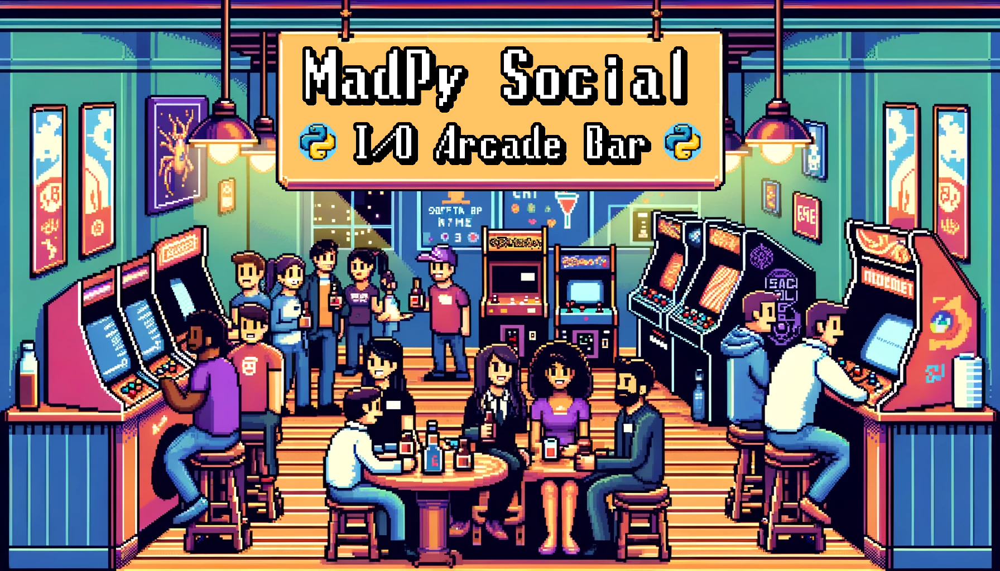

The Madison Python meetup group is hosting a social gathering at I/O Arcade Bar on Willy St. We won't have a speaker or slides. Just friendly conversation. Whether you're an experienced software developer, someone interested to learn about the field, or just looking to meet new people, please join us!
I/O Arcade Bar has beverages (both with & without alcohol), bar snacks, and arcade & pinball games. Attendees must be 21 years of age or older.
When
Thursday, February 8, 2024 at 6:30pm CST
Where
924 Williamson St
How